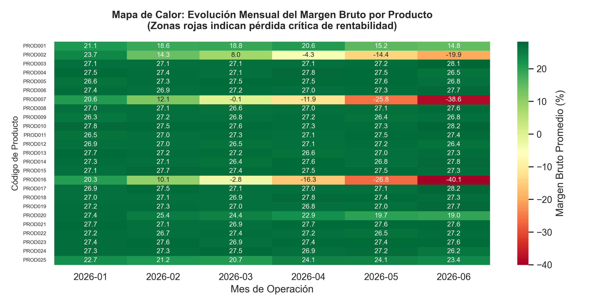
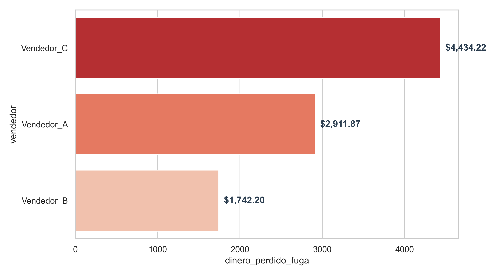

Diagnóstico Express de Márgenes Dinámicos y Control Operativo | Sector Distribución

Al expandir el catálogo a 25 productos base e incorporar la variable "Marca", la matriz de densidad expone una migración crítica del margen bruto hacia zonas de descapitalización (rojo intenso) para el mes de mayo.
Hallazgo Clave: La fuga no es uniforme. Se concentra con fuerza en 7 productos específicos donde el ritmo de compra superó los ajustes de la lista de precios en el piso de venta, generando un fenómeno de subsidio involuntario al consumidor final.
El aislamiento quirúrgico de las transacciones con margen negativo revela que las pérdidas no obedecen únicamente a factores macroeconómicos o inflación de proveedores.
Hallazgo Clave: Al analizar los 5 productos con mayor volumen de fuga inducida, el algoritmo identificó una desviación persistente en la aplicación de descuentos autorizados concentrada en un operador específico. Esto permite separar un problema de indexación de costos de un problema de supervisión interna.

El incremento nominal en el volumen de ventas diarias actúa como un anestésico gerencial. El negocio factura más, pero reduce su capacidad real de reposición de inventario.
A diferencia de la contabilidad fiscal tradicional que evalúa el pasado de forma agregada, este modelo audita la operación línea por línea en tiempo real, transformando datos planos en decisiones de rescate financiero.